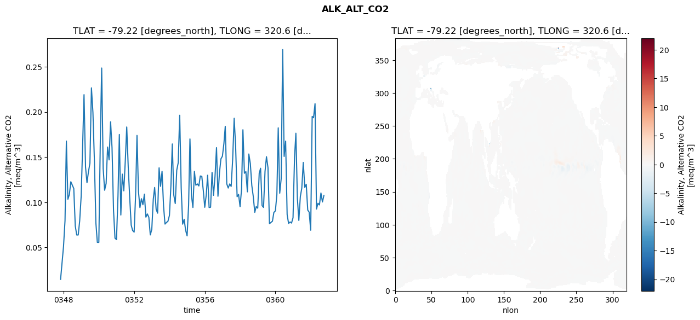
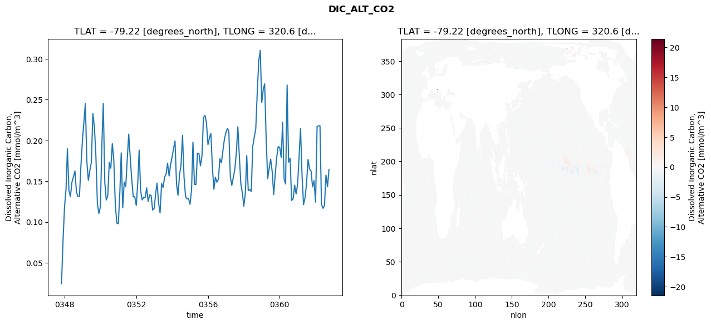
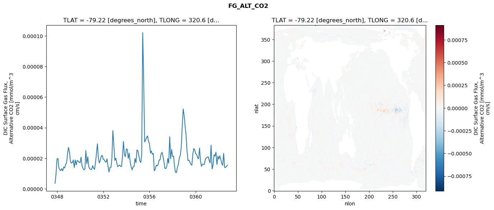
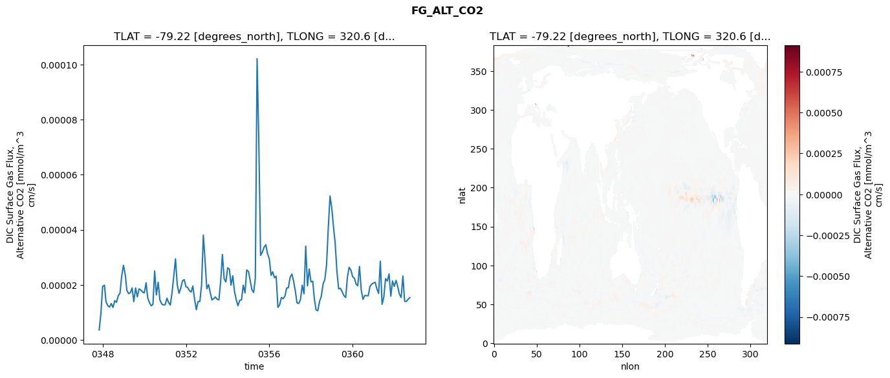
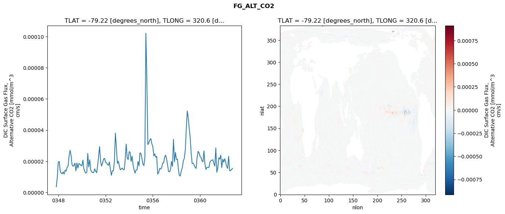

glb-dor_North_Atlantic_basin_003_1999-10-01_00015#
Simulation details#
Case: smyle.cdr-atlas-v0.glb-dor_North_Atlantic_basin_003_1999-10-01_00015.001
Basin: North_Atlantic_basin
Polygon: 3.0
Start date: 1999-10
Show code cell source Hide code cell source
import xarray as xr
import matplotlib.pyplot as plt
Show code cell source Hide code cell source
zarr_store = "/path/to/zarr/store"
# Parameters
zarr_store = "/global/cfs/projectdirs/m4746/Projects/Ocean-CDR-Atlas-v0/data/validation/smyle.cdr-atlas-v0.glb-dor_North_Atlantic_basin_003_1999-10-01_00015.001.validation.zarr"
Show code cell source Hide code cell source
%%time
ds_o = xr.open_zarr(zarr_store).compute()
ds_o
CPU times: user 685 ms, sys: 451 ms, total: 1.14 s
Wall time: 1.37 s
<xarray.Dataset> Size: 2MB
Dimensions: (nlat: 384, nlon: 320, time: 180)
Coordinates:
TLAT float64 8B -79.22
TLONG float64 8B 320.6
ULAT float64 8B -78.95
ULONG float64 8B 321.1
* time (time) object 1kB 0347-11-01 00:00:00 ... 0362-10-01 0...
z_t float32 4B 500.0
Dimensions without coordinates: nlat, nlon
Data variables:
ALK_ALT_CO2_diff (nlat, nlon) float32 492kB nan nan nan ... nan nan nan
ALK_ALT_CO2_rmse (time) float64 1kB 0.01464 0.03243 ... 0.1003 0.1075
DIC_ALT_CO2_diff (nlat, nlon) float32 492kB nan nan nan ... nan nan nan
DIC_ALT_CO2_rmse (time) float64 1kB 0.02446 0.07615 ... 0.1432 0.1645
ECOSYS_IFRAC_diff (nlat, nlon) float32 492kB nan nan nan ... nan nan nan
ECOSYS_IFRAC_rmse (time) float64 1kB 0.0001943 0.0003139 ... 0.0004525
FG_ALT_CO2_diff (nlat, nlon) float32 492kB nan nan nan ... nan nan nan
FG_ALT_CO2_rmse (time) float64 1kB 3.569e-06 9.49e-06 ... 1.532e-05xarray.Dataset
- nlat: 384
- nlon: 320
- time: 180
- TLAT()float64-79.22
- long_name :
- array of t-grid latitudes
- units :
- degrees_north
array(-79.22052261)
- TLONG()float64320.6
- long_name :
- array of t-grid longitudes
- units :
- degrees_east
array(320.56250892)
- ULAT()float64-78.95
- long_name :
- array of u-grid latitudes
- units :
- degrees_north
array(-78.95289509)
- ULONG()float64321.1
- long_name :
- array of u-grid longitudes
- units :
- degrees_east
array(321.12500894)
- time(time)object0347-11-01 00:00:00 ... 0362-10-...
- bounds :
- time_bound
- long_name :
- time
array([cftime.DatetimeNoLeap(347, 11, 1, 0, 0, 0, 0, has_year_zero=True), cftime.DatetimeNoLeap(347, 12, 1, 0, 0, 0, 0, has_year_zero=True), cftime.DatetimeNoLeap(348, 1, 1, 0, 0, 0, 0, has_year_zero=True), cftime.DatetimeNoLeap(348, 2, 1, 0, 0, 0, 0, has_year_zero=True), cftime.DatetimeNoLeap(348, 3, 1, 0, 0, 0, 0, has_year_zero=True), cftime.DatetimeNoLeap(348, 4, 1, 0, 0, 0, 0, has_year_zero=True), cftime.DatetimeNoLeap(348, 5, 1, 0, 0, 0, 0, has_year_zero=True), cftime.DatetimeNoLeap(348, 6, 1, 0, 0, 0, 0, has_year_zero=True), cftime.DatetimeNoLeap(348, 7, 1, 0, 0, 0, 0, has_year_zero=True), cftime.DatetimeNoLeap(348, 8, 1, 0, 0, 0, 0, has_year_zero=True), cftime.DatetimeNoLeap(348, 9, 1, 0, 0, 0, 0, has_year_zero=True), cftime.DatetimeNoLeap(348, 10, 1, 0, 0, 0, 0, has_year_zero=True), cftime.DatetimeNoLeap(348, 11, 1, 0, 0, 0, 0, has_year_zero=True), cftime.DatetimeNoLeap(348, 12, 1, 0, 0, 0, 0, has_year_zero=True), cftime.DatetimeNoLeap(349, 1, 1, 0, 0, 0, 0, has_year_zero=True), cftime.DatetimeNoLeap(349, 2, 1, 0, 0, 0, 0, has_year_zero=True), cftime.DatetimeNoLeap(349, 3, 1, 0, 0, 0, 0, has_year_zero=True), cftime.DatetimeNoLeap(349, 4, 1, 0, 0, 0, 0, has_year_zero=True), cftime.DatetimeNoLeap(349, 5, 1, 0, 0, 0, 0, has_year_zero=True), cftime.DatetimeNoLeap(349, 6, 1, 0, 0, 0, 0, has_year_zero=True), cftime.DatetimeNoLeap(349, 7, 1, 0, 0, 0, 0, has_year_zero=True), cftime.DatetimeNoLeap(349, 8, 1, 0, 0, 0, 0, has_year_zero=True), cftime.DatetimeNoLeap(349, 9, 1, 0, 0, 0, 0, has_year_zero=True), cftime.DatetimeNoLeap(349, 10, 1, 0, 0, 0, 0, has_year_zero=True), cftime.DatetimeNoLeap(349, 11, 1, 0, 0, 0, 0, has_year_zero=True), cftime.DatetimeNoLeap(349, 12, 1, 0, 0, 0, 0, has_year_zero=True), cftime.DatetimeNoLeap(350, 1, 1, 0, 0, 0, 0, has_year_zero=True), cftime.DatetimeNoLeap(350, 2, 1, 0, 0, 0, 0, has_year_zero=True), cftime.DatetimeNoLeap(350, 3, 1, 0, 0, 0, 0, has_year_zero=True), cftime.DatetimeNoLeap(350, 4, 1, 0, 0, 0, 0, has_year_zero=True), cftime.DatetimeNoLeap(350, 5, 1, 0, 0, 0, 0, has_year_zero=True), cftime.DatetimeNoLeap(350, 6, 1, 0, 0, 0, 0, has_year_zero=True), cftime.DatetimeNoLeap(350, 7, 1, 0, 0, 0, 0, has_year_zero=True), cftime.DatetimeNoLeap(350, 8, 1, 0, 0, 0, 0, has_year_zero=True), cftime.DatetimeNoLeap(350, 9, 1, 0, 0, 0, 0, has_year_zero=True), cftime.DatetimeNoLeap(350, 10, 1, 0, 0, 0, 0, has_year_zero=True), cftime.DatetimeNoLeap(350, 11, 1, 0, 0, 0, 0, has_year_zero=True), cftime.DatetimeNoLeap(350, 12, 1, 0, 0, 0, 0, has_year_zero=True), cftime.DatetimeNoLeap(351, 1, 1, 0, 0, 0, 0, has_year_zero=True), cftime.DatetimeNoLeap(351, 2, 1, 0, 0, 0, 0, has_year_zero=True), cftime.DatetimeNoLeap(351, 3, 1, 0, 0, 0, 0, has_year_zero=True), cftime.DatetimeNoLeap(351, 4, 1, 0, 0, 0, 0, has_year_zero=True), cftime.DatetimeNoLeap(351, 5, 1, 0, 0, 0, 0, has_year_zero=True), cftime.DatetimeNoLeap(351, 6, 1, 0, 0, 0, 0, has_year_zero=True), cftime.DatetimeNoLeap(351, 7, 1, 0, 0, 0, 0, has_year_zero=True), cftime.DatetimeNoLeap(351, 8, 1, 0, 0, 0, 0, has_year_zero=True), cftime.DatetimeNoLeap(351, 9, 1, 0, 0, 0, 0, has_year_zero=True), cftime.DatetimeNoLeap(351, 10, 1, 0, 0, 0, 0, has_year_zero=True), cftime.DatetimeNoLeap(351, 11, 1, 0, 0, 0, 0, has_year_zero=True), cftime.DatetimeNoLeap(351, 12, 1, 0, 0, 0, 0, has_year_zero=True), cftime.DatetimeNoLeap(352, 1, 1, 0, 0, 0, 0, has_year_zero=True), cftime.DatetimeNoLeap(352, 2, 1, 0, 0, 0, 0, has_year_zero=True), cftime.DatetimeNoLeap(352, 3, 1, 0, 0, 0, 0, has_year_zero=True), cftime.DatetimeNoLeap(352, 4, 1, 0, 0, 0, 0, has_year_zero=True), cftime.DatetimeNoLeap(352, 5, 1, 0, 0, 0, 0, has_year_zero=True), cftime.DatetimeNoLeap(352, 6, 1, 0, 0, 0, 0, has_year_zero=True), cftime.DatetimeNoLeap(352, 7, 1, 0, 0, 0, 0, has_year_zero=True), cftime.DatetimeNoLeap(352, 8, 1, 0, 0, 0, 0, has_year_zero=True), cftime.DatetimeNoLeap(352, 9, 1, 0, 0, 0, 0, has_year_zero=True), cftime.DatetimeNoLeap(352, 10, 1, 0, 0, 0, 0, has_year_zero=True), cftime.DatetimeNoLeap(352, 11, 1, 0, 0, 0, 0, has_year_zero=True), cftime.DatetimeNoLeap(352, 12, 1, 0, 0, 0, 0, has_year_zero=True), cftime.DatetimeNoLeap(353, 1, 1, 0, 0, 0, 0, has_year_zero=True), cftime.DatetimeNoLeap(353, 2, 1, 0, 0, 0, 0, has_year_zero=True), cftime.DatetimeNoLeap(353, 3, 1, 0, 0, 0, 0, has_year_zero=True), cftime.DatetimeNoLeap(353, 4, 1, 0, 0, 0, 0, has_year_zero=True), cftime.DatetimeNoLeap(353, 5, 1, 0, 0, 0, 0, has_year_zero=True), cftime.DatetimeNoLeap(353, 6, 1, 0, 0, 0, 0, has_year_zero=True), cftime.DatetimeNoLeap(353, 7, 1, 0, 0, 0, 0, has_year_zero=True), cftime.DatetimeNoLeap(353, 8, 1, 0, 0, 0, 0, has_year_zero=True), cftime.DatetimeNoLeap(353, 9, 1, 0, 0, 0, 0, has_year_zero=True), cftime.DatetimeNoLeap(353, 10, 1, 0, 0, 0, 0, has_year_zero=True), cftime.DatetimeNoLeap(353, 11, 1, 0, 0, 0, 0, has_year_zero=True), cftime.DatetimeNoLeap(353, 12, 1, 0, 0, 0, 0, has_year_zero=True), cftime.DatetimeNoLeap(354, 1, 1, 0, 0, 0, 0, has_year_zero=True), cftime.DatetimeNoLeap(354, 2, 1, 0, 0, 0, 0, has_year_zero=True), cftime.DatetimeNoLeap(354, 3, 1, 0, 0, 0, 0, has_year_zero=True), cftime.DatetimeNoLeap(354, 4, 1, 0, 0, 0, 0, has_year_zero=True), cftime.DatetimeNoLeap(354, 5, 1, 0, 0, 0, 0, has_year_zero=True), cftime.DatetimeNoLeap(354, 6, 1, 0, 0, 0, 0, has_year_zero=True), cftime.DatetimeNoLeap(354, 7, 1, 0, 0, 0, 0, has_year_zero=True), cftime.DatetimeNoLeap(354, 8, 1, 0, 0, 0, 0, has_year_zero=True), cftime.DatetimeNoLeap(354, 9, 1, 0, 0, 0, 0, has_year_zero=True), cftime.DatetimeNoLeap(354, 10, 1, 0, 0, 0, 0, has_year_zero=True), cftime.DatetimeNoLeap(354, 11, 1, 0, 0, 0, 0, has_year_zero=True), cftime.DatetimeNoLeap(354, 12, 1, 0, 0, 0, 0, has_year_zero=True), cftime.DatetimeNoLeap(355, 1, 1, 0, 0, 0, 0, has_year_zero=True), cftime.DatetimeNoLeap(355, 2, 1, 0, 0, 0, 0, has_year_zero=True), cftime.DatetimeNoLeap(355, 3, 1, 0, 0, 0, 0, has_year_zero=True), cftime.DatetimeNoLeap(355, 4, 1, 0, 0, 0, 0, has_year_zero=True), cftime.DatetimeNoLeap(355, 5, 1, 0, 0, 0, 0, has_year_zero=True), cftime.DatetimeNoLeap(355, 6, 1, 0, 0, 0, 0, has_year_zero=True), cftime.DatetimeNoLeap(355, 7, 1, 0, 0, 0, 0, has_year_zero=True), cftime.DatetimeNoLeap(355, 8, 1, 0, 0, 0, 0, has_year_zero=True), cftime.DatetimeNoLeap(355, 9, 1, 0, 0, 0, 0, has_year_zero=True), cftime.DatetimeNoLeap(355, 10, 1, 0, 0, 0, 0, has_year_zero=True), cftime.DatetimeNoLeap(355, 11, 1, 0, 0, 0, 0, has_year_zero=True), cftime.DatetimeNoLeap(355, 12, 1, 0, 0, 0, 0, has_year_zero=True), cftime.DatetimeNoLeap(356, 1, 1, 0, 0, 0, 0, has_year_zero=True), cftime.DatetimeNoLeap(356, 2, 1, 0, 0, 0, 0, has_year_zero=True), cftime.DatetimeNoLeap(356, 3, 1, 0, 0, 0, 0, has_year_zero=True), cftime.DatetimeNoLeap(356, 4, 1, 0, 0, 0, 0, has_year_zero=True), cftime.DatetimeNoLeap(356, 5, 1, 0, 0, 0, 0, has_year_zero=True), cftime.DatetimeNoLeap(356, 6, 1, 0, 0, 0, 0, has_year_zero=True), cftime.DatetimeNoLeap(356, 7, 1, 0, 0, 0, 0, has_year_zero=True), cftime.DatetimeNoLeap(356, 8, 1, 0, 0, 0, 0, has_year_zero=True), cftime.DatetimeNoLeap(356, 9, 1, 0, 0, 0, 0, has_year_zero=True), cftime.DatetimeNoLeap(356, 10, 1, 0, 0, 0, 0, has_year_zero=True), cftime.DatetimeNoLeap(356, 11, 1, 0, 0, 0, 0, has_year_zero=True), cftime.DatetimeNoLeap(356, 12, 1, 0, 0, 0, 0, has_year_zero=True), cftime.DatetimeNoLeap(357, 1, 1, 0, 0, 0, 0, has_year_zero=True), cftime.DatetimeNoLeap(357, 2, 1, 0, 0, 0, 0, has_year_zero=True), cftime.DatetimeNoLeap(357, 3, 1, 0, 0, 0, 0, has_year_zero=True), cftime.DatetimeNoLeap(357, 4, 1, 0, 0, 0, 0, has_year_zero=True), cftime.DatetimeNoLeap(357, 5, 1, 0, 0, 0, 0, has_year_zero=True), cftime.DatetimeNoLeap(357, 6, 1, 0, 0, 0, 0, has_year_zero=True), cftime.DatetimeNoLeap(357, 7, 1, 0, 0, 0, 0, has_year_zero=True), cftime.DatetimeNoLeap(357, 8, 1, 0, 0, 0, 0, has_year_zero=True), cftime.DatetimeNoLeap(357, 9, 1, 0, 0, 0, 0, has_year_zero=True), cftime.DatetimeNoLeap(357, 10, 1, 0, 0, 0, 0, has_year_zero=True), cftime.DatetimeNoLeap(357, 11, 1, 0, 0, 0, 0, has_year_zero=True), cftime.DatetimeNoLeap(357, 12, 1, 0, 0, 0, 0, has_year_zero=True), cftime.DatetimeNoLeap(358, 1, 1, 0, 0, 0, 0, has_year_zero=True), cftime.DatetimeNoLeap(358, 2, 1, 0, 0, 0, 0, has_year_zero=True), cftime.DatetimeNoLeap(358, 3, 1, 0, 0, 0, 0, has_year_zero=True), cftime.DatetimeNoLeap(358, 4, 1, 0, 0, 0, 0, has_year_zero=True), cftime.DatetimeNoLeap(358, 5, 1, 0, 0, 0, 0, has_year_zero=True), cftime.DatetimeNoLeap(358, 6, 1, 0, 0, 0, 0, has_year_zero=True), cftime.DatetimeNoLeap(358, 7, 1, 0, 0, 0, 0, has_year_zero=True), cftime.DatetimeNoLeap(358, 8, 1, 0, 0, 0, 0, has_year_zero=True), cftime.DatetimeNoLeap(358, 9, 1, 0, 0, 0, 0, has_year_zero=True), cftime.DatetimeNoLeap(358, 10, 1, 0, 0, 0, 0, has_year_zero=True), cftime.DatetimeNoLeap(358, 11, 1, 0, 0, 0, 0, has_year_zero=True), cftime.DatetimeNoLeap(358, 12, 1, 0, 0, 0, 0, has_year_zero=True), cftime.DatetimeNoLeap(359, 1, 1, 0, 0, 0, 0, has_year_zero=True), cftime.DatetimeNoLeap(359, 2, 1, 0, 0, 0, 0, has_year_zero=True), cftime.DatetimeNoLeap(359, 3, 1, 0, 0, 0, 0, has_year_zero=True), cftime.DatetimeNoLeap(359, 4, 1, 0, 0, 0, 0, has_year_zero=True), cftime.DatetimeNoLeap(359, 5, 1, 0, 0, 0, 0, has_year_zero=True), cftime.DatetimeNoLeap(359, 6, 1, 0, 0, 0, 0, has_year_zero=True), cftime.DatetimeNoLeap(359, 7, 1, 0, 0, 0, 0, has_year_zero=True), cftime.DatetimeNoLeap(359, 8, 1, 0, 0, 0, 0, has_year_zero=True), cftime.DatetimeNoLeap(359, 9, 1, 0, 0, 0, 0, has_year_zero=True), cftime.DatetimeNoLeap(359, 10, 1, 0, 0, 0, 0, has_year_zero=True), cftime.DatetimeNoLeap(359, 11, 1, 0, 0, 0, 0, has_year_zero=True), cftime.DatetimeNoLeap(359, 12, 1, 0, 0, 0, 0, has_year_zero=True), cftime.DatetimeNoLeap(360, 1, 1, 0, 0, 0, 0, has_year_zero=True), cftime.DatetimeNoLeap(360, 2, 1, 0, 0, 0, 0, has_year_zero=True), cftime.DatetimeNoLeap(360, 3, 1, 0, 0, 0, 0, has_year_zero=True), cftime.DatetimeNoLeap(360, 4, 1, 0, 0, 0, 0, has_year_zero=True), cftime.DatetimeNoLeap(360, 5, 1, 0, 0, 0, 0, has_year_zero=True), cftime.DatetimeNoLeap(360, 6, 1, 0, 0, 0, 0, has_year_zero=True), cftime.DatetimeNoLeap(360, 7, 1, 0, 0, 0, 0, has_year_zero=True), cftime.DatetimeNoLeap(360, 8, 1, 0, 0, 0, 0, has_year_zero=True), cftime.DatetimeNoLeap(360, 9, 1, 0, 0, 0, 0, has_year_zero=True), cftime.DatetimeNoLeap(360, 10, 1, 0, 0, 0, 0, has_year_zero=True), cftime.DatetimeNoLeap(360, 11, 1, 0, 0, 0, 0, has_year_zero=True), cftime.DatetimeNoLeap(360, 12, 1, 0, 0, 0, 0, has_year_zero=True), cftime.DatetimeNoLeap(361, 1, 1, 0, 0, 0, 0, has_year_zero=True), cftime.DatetimeNoLeap(361, 2, 1, 0, 0, 0, 0, has_year_zero=True), cftime.DatetimeNoLeap(361, 3, 1, 0, 0, 0, 0, has_year_zero=True), cftime.DatetimeNoLeap(361, 4, 1, 0, 0, 0, 0, has_year_zero=True), cftime.DatetimeNoLeap(361, 5, 1, 0, 0, 0, 0, has_year_zero=True), cftime.DatetimeNoLeap(361, 6, 1, 0, 0, 0, 0, has_year_zero=True), cftime.DatetimeNoLeap(361, 7, 1, 0, 0, 0, 0, has_year_zero=True), cftime.DatetimeNoLeap(361, 8, 1, 0, 0, 0, 0, has_year_zero=True), cftime.DatetimeNoLeap(361, 9, 1, 0, 0, 0, 0, has_year_zero=True), cftime.DatetimeNoLeap(361, 10, 1, 0, 0, 0, 0, has_year_zero=True), cftime.DatetimeNoLeap(361, 11, 1, 0, 0, 0, 0, has_year_zero=True), cftime.DatetimeNoLeap(361, 12, 1, 0, 0, 0, 0, has_year_zero=True), cftime.DatetimeNoLeap(362, 1, 1, 0, 0, 0, 0, has_year_zero=True), cftime.DatetimeNoLeap(362, 2, 1, 0, 0, 0, 0, has_year_zero=True), cftime.DatetimeNoLeap(362, 3, 1, 0, 0, 0, 0, has_year_zero=True), cftime.DatetimeNoLeap(362, 4, 1, 0, 0, 0, 0, has_year_zero=True), cftime.DatetimeNoLeap(362, 5, 1, 0, 0, 0, 0, has_year_zero=True), cftime.DatetimeNoLeap(362, 6, 1, 0, 0, 0, 0, has_year_zero=True), cftime.DatetimeNoLeap(362, 7, 1, 0, 0, 0, 0, has_year_zero=True), cftime.DatetimeNoLeap(362, 8, 1, 0, 0, 0, 0, has_year_zero=True), cftime.DatetimeNoLeap(362, 9, 1, 0, 0, 0, 0, has_year_zero=True), cftime.DatetimeNoLeap(362, 10, 1, 0, 0, 0, 0, has_year_zero=True)], dtype=object) - z_t()float32500.0
- long_name :
- depth from surface to midpoint of layer
- positive :
- down
- units :
- centimeters
- valid_max :
- 537500.0
- valid_min :
- 500.0
array(500., dtype=float32)
- ALK_ALT_CO2_diff(nlat, nlon)float32nan nan nan nan ... nan nan nan nan
- cell_methods :
- time: mean
- grid_loc :
- 3111
- long_name :
- Alkalinity, Alternative CO2
- units :
- meq/m^3
array([[ nan, nan, nan, ..., nan, nan, nan], [ nan, nan, nan, ..., nan, nan, nan], [ 0.02294922, -0.00317383, -0.00488281, ..., nan, nan, nan], ..., [ nan, nan, nan, ..., nan, nan, nan], [ nan, nan, nan, ..., nan, nan, nan], [ nan, nan, nan, ..., nan, nan, nan]], dtype=float32) - ALK_ALT_CO2_rmse(time)float640.01464 0.03243 ... 0.1003 0.1075
- cell_methods :
- time: mean
- grid_loc :
- 3111
- long_name :
- Alkalinity, Alternative CO2
- units :
- meq/m^3
array([0.0146444 , 0.03242933, 0.05113244, 0.07965504, 0.16777642, 0.10335914, 0.10839734, 0.12273859, 0.11897647, 0.11523443, 0.07372481, 0.06377374, 0.06381027, 0.07924023, 0.10687689, 0.16408433, 0.21911001, 0.13895558, 0.1216766 , 0.13392485, 0.14329509, 0.22665765, 0.1994541 , 0.14665246, 0.0772308 , 0.05562381, 0.05558448, 0.16969665, 0.24860644, 0.13721297, 0.11334072, 0.12089279, 0.16114689, 0.14690992, 0.1890451 , 0.16045249, 0.0907761 , 0.06028706, 0.05869245, 0.10680608, 0.17505336, 0.08588 , 0.13117722, 0.11265655, 0.14466116, 0.18336102, 0.13892213, 0.10546903, 0.07475598, 0.06871342, 0.06695461, 0.10887902, 0.1740036 , 0.11153903, 0.09411298, 0.10395586, 0.09725851, 0.1089944 , 0.08353957, 0.08707736, 0.08341846, 0.06383285, 0.0700465 , 0.10355057, 0.11637487, 0.09224115, 0.0879217 , 0.13812017, 0.11767006, 0.13417404, 0.09586819, 0.07585191, 0.07765234, 0.07900086, 0.08548119, 0.11891214, 0.16453127, 0.1079218 , 0.09862034, 0.13552428, 0.14365635, 0.19631913, 0.11592173, 0.07578942, 0.08117996, 0.0690952 , 0.06280096, 0.09664201, 0.17011208, 0.10762116, 0.09424744, 0.13418801, 0.11891935, 0.12032104, 0.11804884, 0.12908448, 0.12864889, 0.11344016, 0.09441817, 0.10812272, 0.12992076, 0.0942013 , 0.09450363, 0.13297921, 0.10766911, 0.12849143, 0.16046533, 0.10665444, 0.13261217, 0.14800197, 0.1509873 , 0.16511974, 0.18408451, 0.12038766, 0.11576571, 0.12030554, 0.11756539, 0.14753147, 0.19298548, 0.1623973 , 0.10617597, 0.1086992 , 0.09514403, 0.1145842 , 0.18027176, 0.13212485, 0.13392558, 0.11152213, 0.15342414, 0.14291144, 0.11850985, 0.10640202, 0.08883718, 0.09521791, 0.09346078, 0.1320917 , 0.13763933, 0.09635702, 0.09431421, 0.13412641, 0.15044466, 0.13830392, 0.07625246, 0.07768961, 0.07901851, 0.08878266, 0.09041643, 0.10843179, 0.1823793 , 0.10998552, 0.12599647, 0.26897949, 0.15074187, 0.16769536, 0.08649894, 0.07649018, 0.07821184, 0.07699239, 0.08288217, 0.14975308, 0.17641512, 0.10424578, 0.07989675, 0.10632905, 0.11558603, 0.1440962 , 0.1164339 , 0.11994268, 0.09134367, 0.08900392, 0.06906657, 0.19504622, 0.19357367, 0.20912239, 0.09249207, 0.0988977 , 0.09706861, 0.11024836, 0.10029541, 0.10753574]) - DIC_ALT_CO2_diff(nlat, nlon)float32nan nan nan nan ... nan nan nan nan
- cell_methods :
- time: mean
- grid_loc :
- 3111
- long_name :
- Dissolved Inorganic Carbon, Alternative CO2
- units :
- mmol/m^3
array([[ nan, nan, nan, ..., nan, nan, nan], [ nan, nan, nan, ..., nan, nan, nan], [0.03149414, 0.00952148, 0.00585938, ..., nan, nan, nan], ..., [ nan, nan, nan, ..., nan, nan, nan], [ nan, nan, nan, ..., nan, nan, nan], [ nan, nan, nan, ..., nan, nan, nan]], dtype=float32) - DIC_ALT_CO2_rmse(time)float640.02446 0.07615 ... 0.1432 0.1645
- cell_methods :
- time: mean
- grid_loc :
- 3111
- long_name :
- Dissolved Inorganic Carbon, Alternative CO2
- units :
- mmol/m^3
array([0.02446357, 0.07614642, 0.11831338, 0.14038413, 0.18963665, 0.13874938, 0.13100465, 0.14889017, 0.15521425, 0.16260717, 0.13668626, 0.13124986, 0.13159883, 0.16919542, 0.20026262, 0.2239372 , 0.24515825, 0.17367412, 0.15110971, 0.163393 , 0.1729131 , 0.2329365 , 0.21662536, 0.18214604, 0.122764 , 0.11039987, 0.11851298, 0.19584459, 0.24539343, 0.14834327, 0.12705114, 0.13255677, 0.1731329 , 0.16597984, 0.19618717, 0.17604463, 0.12170742, 0.09879202, 0.09802105, 0.13587557, 0.18477776, 0.11738348, 0.1490136 , 0.14329473, 0.17590918, 0.20769409, 0.17899371, 0.15272299, 0.13091865, 0.13123471, 0.12047936, 0.1478031 , 0.18801448, 0.13803229, 0.12713367, 0.13019918, 0.12993851, 0.14186604, 0.12509359, 0.13350951, 0.13201491, 0.11464323, 0.11695967, 0.13548605, 0.14768228, 0.12312162, 0.11126224, 0.14717361, 0.14235182, 0.15497184, 0.15903983, 0.17218839, 0.15638915, 0.17015583, 0.17980665, 0.19054436, 0.19932004, 0.14634392, 0.13277372, 0.15776007, 0.16984601, 0.20620322, 0.15480692, 0.13152588, 0.12829745, 0.12879775, 0.12181791, 0.13980271, 0.19791487, 0.14619068, 0.14598568, 0.18443697, 0.18390065, 0.16892686, 0.18110605, 0.22783902, 0.23069106, 0.22180215, 0.19486275, 0.20365907, 0.2087386 , 0.1675213 , 0.14020722, 0.15499444, 0.14888161, 0.15227508, 0.17753964, 0.17271493, 0.18715074, 0.20137492, 0.20950152, 0.21474554, 0.21154879, 0.15550297, 0.14497389, 0.15489683, 0.16444028, 0.18488643, 0.21665227, 0.18112784, 0.146813 , 0.13599809, 0.11946881, 0.13594802, 0.18131247, 0.13855791, 0.13995067, 0.13732293, 0.19261371, 0.20384034, 0.21438106, 0.25876045, 0.29801116, 0.31026395, 0.24654392, 0.26286182, 0.26924167, 0.20078877, 0.15316287, 0.16608542, 0.17703333, 0.16183491, 0.13367929, 0.15782033, 0.17927928, 0.19239885, 0.19141112, 0.17896576, 0.22236049, 0.15264285, 0.14669835, 0.26784482, 0.1733643 , 0.17822211, 0.12646631, 0.12843128, 0.14519747, 0.13450517, 0.14638513, 0.18152153, 0.21482307, 0.15675244, 0.12133581, 0.12997308, 0.14695691, 0.17671478, 0.16502253, 0.16258907, 0.14311737, 0.15069245, 0.12444401, 0.2170906 , 0.21790206, 0.21787949, 0.12171579, 0.11685597, 0.12004657, 0.15755365, 0.14321119, 0.16446263]) - ECOSYS_IFRAC_diff(nlat, nlon)float32nan nan nan nan ... nan nan nan nan
- cell_methods :
- time: mean
- grid_loc :
- 2110
- long_name :
- Ice Fraction for ecosys fluxes
- units :
- fraction
array([[ nan, nan, nan, ..., nan, nan, nan], [ nan, nan, nan, ..., nan, nan, nan], [0.0000000e+00, 3.5762787e-06, 1.3709068e-06, ..., nan, nan, nan], ..., [ nan, nan, nan, ..., nan, nan, nan], [ nan, nan, nan, ..., nan, nan, nan], [ nan, nan, nan, ..., nan, nan, nan]], dtype=float32) - ECOSYS_IFRAC_rmse(time)float640.0001943 0.0003139 ... 0.0004525
- cell_methods :
- time: mean
- grid_loc :
- 2110
- long_name :
- Ice Fraction for ecosys fluxes
- units :
- fraction
array([0.00019431, 0.0003139 , 0.00117342, 0.0012987 , 0.00031967, 0.00042558, 0.00048296, 0.00042493, 0.00032726, 0.00072925, 0.00065825, 0.00042873, 0.00054117, 0.00050882, 0.00086808, 0.00165888, 0.00097338, 0.00068126, 0.00069764, 0.00051159, 0.00036477, 0.00070476, 0.00064649, 0.00051291, 0.00034835, 0.00032645, 0.00043074, 0.0007946 , 0.00041145, 0.00051382, 0.00032295, 0.00031133, 0.00044818, 0.00086426, 0.00067349, 0.00044851, 0.0004869 , 0.00035124, 0.00055631, 0.00091593, 0.00169922, 0.00119777, 0.00045523, 0.0003832 , 0.00044956, 0.00068645, 0.00057002, 0.00052406, 0.00049949, 0.00045799, 0.00095073, 0.00095242, 0.00097665, 0.00067317, 0.00036504, 0.00032377, 0.00043598, 0.0007899 , 0.00091595, 0.00068983, 0.00071591, 0.0007478 , 0.00092439, 0.00069136, 0.0003443 , 0.00033901, 0.00044382, 0.00091498, 0.00058985, 0.00054828, 0.00050275, 0.00041367, 0.00053941, 0.00058045, 0.0006102 , 0.001121 , 0.00119959, 0.0007649 , 0.00065856, 0.00044811, 0.00072878, 0.0006509 , 0.00063816, 0.00064479, 0.00034974, 0.0003793 , 0.00049939, 0.00064506, 0.00037613, 0.00047695, 0.00046159, 0.00039516, 0.00035961, 0.00062062, 0.00081503, 0.00064435, 0.00035579, 0.00037981, 0.00063209, 0.00087155, 0.00086772, 0.00072079, 0.00039461, 0.0003722 , 0.00060389, 0.0009098 , 0.00062016, 0.00051558, 0.00048191, 0.00051416, 0.00050311, 0.00101653, 0.00058661, 0.00049799, 0.0004275 , 0.00044409, 0.00046643, 0.00070969, 0.0005334 , 0.00056825, 0.00049849, 0.000403 , 0.00068414, 0.00071341, 0.00041407, 0.00038029, 0.00036046, 0.0004678 , 0.00059189, 0.00082626, 0.00037645, 0.00037164, 0.00042269, 0.00031867, 0.00032936, 0.00071464, 0.00066821, 0.00055519, 0.00063792, 0.0004231 , 0.00045727, 0.00080586, 0.00038604, 0.00033649, 0.00042876, 0.00045665, 0.00030508, 0.00072337, 0.0004152 , 0.0004076 , 0.00047783, 0.00048808, 0.00055841, 0.00100109, 0.00037805, 0.00039191, 0.00047972, 0.0004635 , 0.00077384, 0.00091591, 0.00087691, 0.00059163, 0.00045542, 0.00025852, 0.0004333 , 0.00089732, 0.00131929, 0.00113408, 0.00049418, 0.00038687, 0.00055879, 0.00115571, 0.00116643, 0.00097269, 0.00050094, 0.00040782, 0.00049832, 0.00068102, 0.00064056, 0.00045248]) - FG_ALT_CO2_diff(nlat, nlon)float32nan nan nan nan ... nan nan nan nan
- cell_methods :
- time: mean
- grid_loc :
- 2110
- long_name :
- DIC Surface Gas Flux, Alternative CO2
- units :
- mmol/m^3 cm/s
array([[ nan, nan, nan, ..., nan, nan, nan], [ nan, nan, nan, ..., nan, nan, nan], [-9.0818730e-09, -1.2974283e-08, -7.3470940e-09, ..., nan, nan, nan], ..., [ nan, nan, nan, ..., nan, nan, nan], [ nan, nan, nan, ..., nan, nan, nan], [ nan, nan, nan, ..., nan, nan, nan]], dtype=float32) - FG_ALT_CO2_rmse(time)float643.569e-06 9.49e-06 ... 1.532e-05
- cell_methods :
- time: mean
- grid_loc :
- 2110
- long_name :
- DIC Surface Gas Flux, Alternative CO2
- units :
- mmol/m^3 cm/s
array([3.56854090e-06, 9.48994651e-06, 1.94087561e-05, 1.98404895e-05, 1.38586198e-05, 1.23770501e-05, 1.19140595e-05, 1.31993404e-05, 1.17683736e-05, 1.42317438e-05, 1.36499522e-05, 1.60039236e-05, 1.69889406e-05, 2.32610569e-05, 2.71041055e-05, 2.36181376e-05, 1.79867576e-05, 1.67752376e-05, 1.71596396e-05, 1.88549709e-05, 1.38773027e-05, 1.88542294e-05, 1.56272675e-05, 1.85331240e-05, 1.80976063e-05, 1.73660293e-05, 1.70816333e-05, 2.07182161e-05, 1.52854168e-05, 1.35019386e-05, 1.23907573e-05, 1.28511090e-05, 2.50242858e-05, 1.63170317e-05, 2.09262432e-05, 1.45542908e-05, 1.30403899e-05, 1.26934178e-05, 1.27719947e-05, 1.51373988e-05, 1.36411284e-05, 1.26309694e-05, 1.70525352e-05, 2.30900808e-05, 2.94405518e-05, 1.99519611e-05, 1.69054604e-05, 1.87782748e-05, 2.14292482e-05, 2.18902087e-05, 1.93002372e-05, 1.90105200e-05, 1.79049763e-05, 1.73688642e-05, 1.95381824e-05, 1.46915944e-05, 1.09544123e-05, 1.39324459e-05, 1.39324843e-05, 1.98943508e-05, 3.80572840e-05, 2.89198264e-05, 1.85674296e-05, 2.00437040e-05, 1.72469709e-05, 1.45024695e-05, 1.49577527e-05, 1.55904854e-05, 1.47384279e-05, 1.44980463e-05, 2.13236379e-05, 3.09982723e-05, 2.21496776e-05, 2.10292065e-05, 2.61677598e-05, 2.56798496e-05, 1.98664013e-05, 2.32664858e-05, 1.75381257e-05, 1.45926966e-05, ... 2.47248132e-05, 2.25822778e-05, 2.31073704e-05, 1.17787733e-05, 1.27595142e-05, 1.53667528e-05, 1.49456344e-05, 1.58432631e-05, 1.88151184e-05, 1.89385375e-05, 2.27206472e-05, 2.39070138e-05, 2.14668019e-05, 1.78830579e-05, 1.34703612e-05, 1.32108964e-05, 1.46531092e-05, 1.98493353e-05, 1.67435691e-05, 3.40529540e-05, 1.96041229e-05, 2.57498458e-05, 2.10882838e-05, 2.12945314e-05, 1.49053272e-05, 1.08267101e-05, 1.05956803e-05, 1.40170639e-05, 1.58227457e-05, 2.02858818e-05, 2.19143127e-05, 2.73114791e-05, 4.09972658e-05, 5.22656211e-05, 4.77731090e-05, 4.07070876e-05, 3.51653823e-05, 2.48010505e-05, 1.85156009e-05, 1.87141624e-05, 1.75302700e-05, 1.60629130e-05, 1.54270023e-05, 2.27210664e-05, 2.63664955e-05, 2.53845500e-05, 2.29494316e-05, 2.23650339e-05, 2.03359071e-05, 1.96569640e-05, 2.66628314e-05, 1.80659527e-05, 1.46882803e-05, 1.61099677e-05, 1.60633244e-05, 1.59876565e-05, 1.94305249e-05, 2.02250349e-05, 2.06523393e-05, 2.09260255e-05, 1.85787126e-05, 1.68793872e-05, 2.85704742e-05, 1.29101803e-05, 1.55228459e-05, 2.22353040e-05, 2.13773769e-05, 2.39679721e-05, 1.58602345e-05, 2.13961162e-05, 1.94507521e-05, 2.16104361e-05, 1.94684629e-05, 1.65517992e-05, 1.53871795e-05, 2.31888921e-05, 1.39860991e-05, 1.39472605e-05, 1.47420466e-05, 1.53162402e-05])
- timePandasIndex
PandasIndex(CFTimeIndex([0347-11-01 00:00:00, 0347-12-01 00:00:00, 0348-01-01 00:00:00, 0348-02-01 00:00:00, 0348-03-01 00:00:00, 0348-04-01 00:00:00, 0348-05-01 00:00:00, 0348-06-01 00:00:00, 0348-07-01 00:00:00, 0348-08-01 00:00:00, ... 0362-01-01 00:00:00, 0362-02-01 00:00:00, 0362-03-01 00:00:00, 0362-04-01 00:00:00, 0362-05-01 00:00:00, 0362-06-01 00:00:00, 0362-07-01 00:00:00, 0362-08-01 00:00:00, 0362-09-01 00:00:00, 0362-10-01 00:00:00], dtype='object', length=180, calendar='noleap', freq='MS'))
Show code cell source Hide code cell source
variables = [v[:-5] for v in ds_o.variables if "_rmse" in v]
Show code cell source Hide code cell source
plt.rcParams.update({'figure.max_open_warning': 0})
for v in variables:
fig, axs = plt.subplots(1, 2, figsize=(15, 6))
ds_o[f"{v}_rmse"].plot(ax=axs[0])
ds_o[f"{v}_diff"].plot(ax=axs[1])
plt.suptitle(v, fontweight="bold")


 

